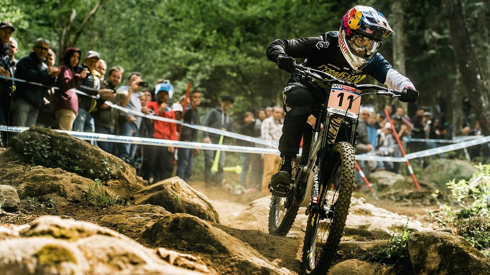
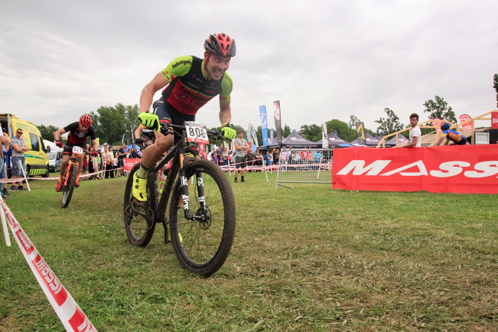

Downhill
Downhill mountain biking (DH) is a genre of mountain biking practiced on steep, rough terrain that often features jumps, drops, rock gardens and other obstacles. Jumps can be up to and including 12 meters (39 feet), and drops can be greater than 3 meters (10 feet).
Read more>>>XC(Cross Country)
Cross country (XC) mountain biking is a form of mountain biking that is performed on paths consisting of forrest paths, smooth roads, singletrack, and paved roads connecting trails. XC biking emphasizes endurance above technical skill.
Read more>>>Enduro

Enduro in its most basic definition is a type of mountain bike racing where the downhills are timed, and the uphills are mandatory but not timed. Riders are timed in stages that are primarily downhill, with neutral "transfer" stages in between. The transfer stages usually must be completed within a time-limit, but are not part of the accumulated time.
Read more>>>